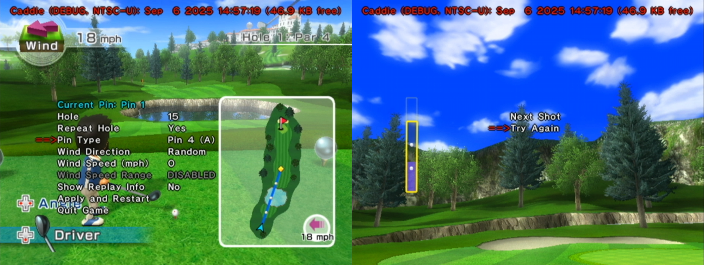

|
|
Caddie is a practice mod for Golf in Wii Sports Resort. With utilities like selecting winds and retrying shots, it crucially improves the learning experience, whether you play for score or speed.  Caddie has undergone many changes since it was initially created by kiwi in 2020. New functionality is still in development, and any new builds will be available through this website. To get started, follow the install guide. For discussion and troubleshooting, please join the Discord server. |
| website by cyndifusic © 2026 |